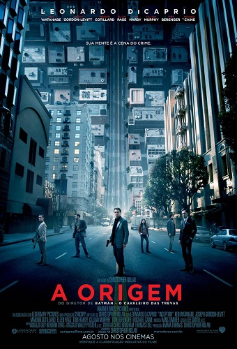
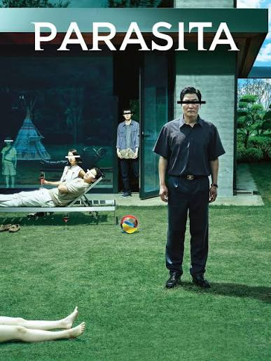
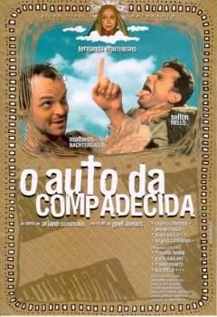
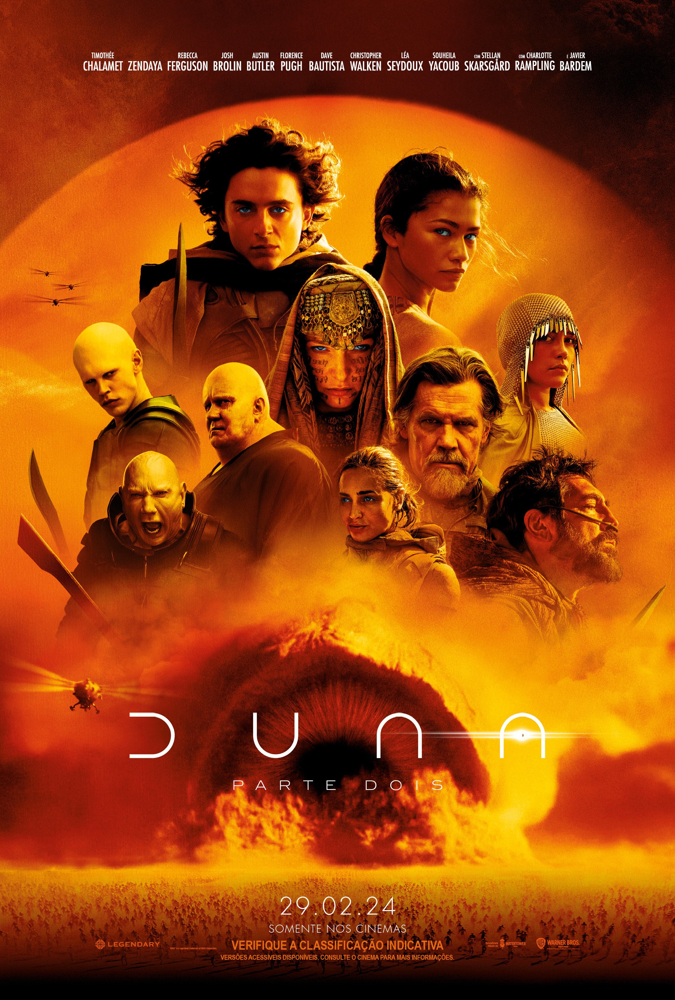
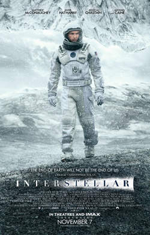
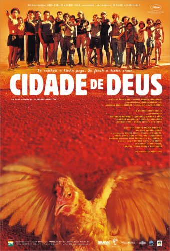

CineTrack
CineTrack é o gerenciador pessoal de filmes: registre
o que já viu, o que está vendo e o que quer ver.

A Origem
2010 - Ficção científica
Nota: ★★★★★

Parasita
2019 - Suspense
Nota: ★★★★★

O auto da compadecida
2000 - Comédia
Nota: ★★★★★

Duna: parte 2
2024 - Ficção científica
Nota: ★★★★★

Interstelar
2014 - Aventura
Nota: ★★★★★

Cidade de Deus
2002 - Drama
Nota: ★★★★★